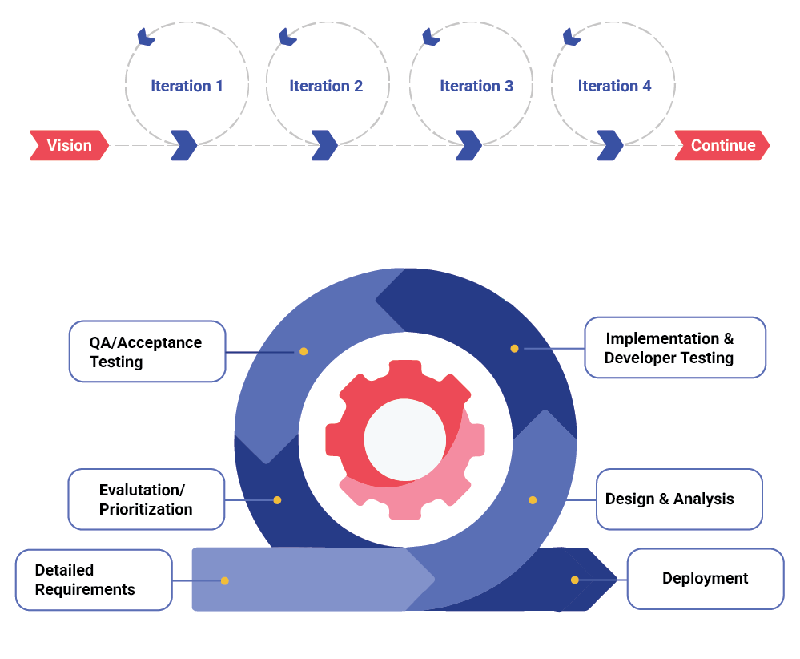

Collaboration among stakeholders to deliver value-driven services to customers in frequent increments with consistent reflection and adaption.
Agile and Scrum begin with a Product. The Product can be anything that offers value to a customer or group of customers. Products are dynamic because customers are dynamic—ever-changing and evolving. What delighted the customer a while ago is now standard and expected as the minimum acceptable product today. This is where the Product Owner steps in. The Product Owner maintains the product's viability in the marketplace by increasing its real or perceived value to the customer over time.
The Product Backlog is a collection of all potential product enhancements, fixes, and upgrades. Regardless of the source, the Product Backlog contains all the features that are needed in the product. Product owners, development team, and customers create the features as part of the backlog to plan their next release work.
Items in the Product Backlog are defined by their User Story. A User Story is a statement about the product need from the requestor's point of view, usually the customer. When a new User Story enters the Product Backlog, it may not be well-defined or may be too large to complete within one sprint. The Product Owner, with the help of the Scrum Team, progressively refines or grooms large User Stories in the backlog until they are "ready." A User Story is ready when it has enough detail and refinement that the development team can understand it, and it is small and manageable enough to be completed within one sprint.
Grooming the Product Backlog also includes prioritizing the User Stories. User Stories are prioritized based on factors such as customer need, market competition, mandate deadlines, corporate strategy, and end-of-life technology. The Product Owner sets the User Story priority but must solicit information from the Scrum Team and architecture experts to ensure the priority is technically feasible. User Stories with greater priority should have higher levels of detail and refinement. This progressive elaboration of the Product Backlog in Agile differs from waterfall, where all requirements must be fully detailed before work can begin. In Agile, a User Story gains greater detail as its priority increases. User Stories with the highest priority in the Product Backlog should be fully elaborated, estimated, and small enough to be completed within one sprint.
Planned Sprint Backlog and final Sprint Backlog are subsets of the Product Backlog. Product Owner identifies the User Stories he wants to complete in the upcoming Sprint by assigning them to the Sprint Backlog.
From the Product Owner's perspective, the Planned Sprint Backlog contains User Stories that are:
The final Sprint Backlog is the responsibility of the Scrum Team. The Scrum Team reviews each User Story in the Sprint Backlog and confirms with the Product Owner:
An effective Scrum Team will not have large gaps in the planned and final Sprint Backlogs; only making adjustments to fit adjusted points into Sprint velocity, or a technology impediment or prerequisite dictates a change to the final Sprint Backlog. This will be a sign of maturing Scrum Teams as we progress.
Scrum Process Flow:
| Scrum Roles | Key Responsibilities |
|---|---|
| Product Owner |
• Responsible for creating the product vision and building the product backlog • Constantly re-prioritizes the Product Backlog, adjusting any long-term expectations such as release plans • Works closely with stakeholders (internal and external) to understand & prioritize product increments based on agreed expectations from the product • Trained to ask the right questions that can extract clear and complete requirements • Responsible for maximizing the return on investment (ROI) of the development effort • Decides the deliverables in subsequent deployments • Accepts or rejects each product increment • Manages budgets and release plan & schedule • Analyze dev team productivity progress and identify improvement ideas |
| Scrum Master |
• Facilitates the Scrum process • Helps resolve impediments • Creates an environment conducive to team self-organization • Captures empirical data to adjust forecasts • Shields the team from external interference and distractions to keep it in group flow (a.k.a. the zone) • Enforces time boxes • Keeps Scrum artefacts visible • Promotes improved engineering practices • Has no management authority over the team |
| Development team |
• Cross-functional • Self-organizing / self-managing, without externally assigned roles • Negotiates commitments with the Product Owner, one Sprint at a time • Has autonomy regarding how to reach commitments • Intensely collaborative • Responsible for completing all the tasks in a sprint • Owns the Process to do the work |
The Scrum Team consists of a Product Owner, the Development Team, and a Scrum Master. Scrum Teams are self-organizing and cross-functional. Self-organizing teams choose how best to accomplish their work, rather than being directed by others outside the team. Cross-functional teams possess all the competencies needed to accomplish the work without depending on others who are not part of the team. The Scrum team model optimizes flexibility, creativity, and productivity.
Scrum prescribes four formal events for inspection and adaptation, as described in the Scrum document:
This stage produces the source code, executables, and test data. The programmers ensure that the coding standards are followed.
Below are important Scrum ceremonies and activities performed. Apart from the below depending on project complexity and priorities, additional ceremonies like Backlog grooming, Backlog refinement, Scrum of Scrum, etc. are planned.
| Frequency | Duration | Participants |
|---|---|---|
| Daily Scrum call | 15 minutes | All Dev Team main active participants + Product Manager |
| Bi-Weekly Status | 30 minutes | Engagement Owners Product Manager SM/BA |
| Backlog Refinement Meetings | 60 minutes | Product Owner Engineering Team Engineering Managers SM/BA |
| Sprint Planning (2-week sprints) | 60 - 180 minutes | Development Team, Product Manager |
| Sprint Demo (2-week sprints) | 60 minutes | All Involved in Current Sprint Invited Dev Team and Product Manager Main active participants |
| Retrospective after every milestone | 30 minutes | All Invited Dev Team and Product Manager main active participants |
We use 2-week sprints, with 4 sprints comprising one project phase.